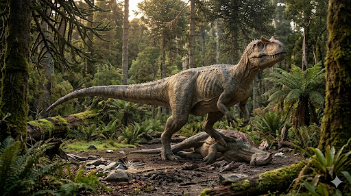

אלוזאורוס
The Different Lizard: Allosaurus fragilis

תיק מחקר: נתונים אבולוציוניים
תקופת פעילות
לפני כ-155 עד 145 מיליון שנה
תור היורה המאוחר (גיל הקימרידג'י עד הטיטוני)
מסה ומשקל
1.5 עד 2 טונות
זריז וקל יותר בהשוואה לתרופודים מאוחרים כמו הטי-רקס. פרטי ענק (כמו Epanterias) הגיעו גם ל-4 טונות.
ממדים (אורך)
8.5 עד 12 מטרים
כולל זנב ארוך ושרירי שאיזן את פלג גופו הקדמי
מיקום גיאוגרפי
אמריקה הצפונית ואירופה
נמצא בעיקר בתצורת מוריסון (Morrison Formation) המפורסמת בארה"ב (יוטה, קולורדו, ויומינג), וכן שרידים נמצאו בפורטוגל.
סיווג טקסונומי קריטי
דינוזאור תרופוד (Theropoda / Allosauridae)
השליט המוחלט של סוף תור היורה. האלוזאורוס היה הטורף הנפוץ ביותר במערכת האקולוגית שלו, וצד באופן פעיל אוכלי-צמחים ענקיים כמו הדיפלודוקוס והסטגוזאורוס.
01 // ניתוח אטימולוגי נרחב
| החלק בשם | שפת מקור | פירוש ומשמעות היסטורית |
|---|---|---|
| Allo- | יוונית עתיקה (ἄλλος / allos) | שונה / אחר הוענק לו בשנת 1877 על ידי הפלאונטולוג המפורסם עותניאל צ'ארלס מארש (O.C. Marsh). השם נבחר מכיוון שחוליות עמוד השדרה שלו היו קעורות וייחודיות מאוד, ושונות מכל חוליות הדינוזאורים שהיו מוכרות למדע עד אותה עת. |
| -saurus | יוונית עתיקה (σαῦρος / sauros) | לטאה הסיומת הסטנדרטית לזוחלים ודינוזאורים. הלחם השם יוצר את המשמעות המלאה: **"הלטאה השונה"**. |
| fragilis | לטינית | שביר / עדין שם המין הוענק משום שעצמותיו (ובמיוחד החוליות) היו מלאות בחללי אוויר שהפכו אותן לקלות משקל באופן מפתיע עבור חיה כה עצומה, מה ששיווה להן מראה "שביר" לחוקרי המאה ה-19. |
02 // תולדות הגילוי: מלחמות העצמות ומחצבת המוות
משלחות החפירה ו"מלחמות העצמות"
האלוזאורוס התגלה בתקופה הסוערת ביותר בתולדות הפלאונטולוגיה – **מלחמות העצמות (The Bone Wars)**. זה היה מאבק יוקרה מטורף ואכזרי בין שני מדענים אמריקאים: עותניאל צ'ארלס מארש ואדוארד דרינקר קופ. בשנת 1877, מארש קיבל לידיו עצמות מוזרות מקולורדו וזיהה מיד שמדובר בטורף חדש, לו קרא אלוזאורוס. במקביל, קופ מצא עצמות דומות וקרא להן בשמות אחרים. הבלבול הטקסונומי הזה דרש עשרות שנים כדי להתברר ולהתאחד תחת שם אחד.
מלכודת הטורפים של קליבלנד-לויד
אחת מתגליות הפלאונטולוגיה המדהימות בהיסטוריה התרחשה במחצבת קליבלנד-לויד ביוטה (Cleveland-Lloyd Dinosaur Quarry). חוקרים חשפו שם "מלכודת מוות" קדומה – בור בוץ רעיל שאליו נמשכו דינוזאורים. בצורה חסרת תקדים, התגלו שם עצמותיהם של **למעלה מ-46 פרטים שונים של אלוזאורוס** מעורבבים יחד, מגורים ועד בוגרים זקנים. נראה שטורפים אלו נמשכו לריח הנבלות ששקעו בבוץ, נלכדו בעצמם, והפכו לפיתיון לבאים אחריהם.
מצב הממצאים: שלמות יוצאת דופן
- מאגר עצום של מידע: בזכות מחצבת קליבלנד-לויד, האלוזאורוס הוא ככל הנראה התרופוד (הדינוזאור הטורף) הנחקר והידוע ביותר בעולם. החוקרים הצליחו למפות את כל תהליך הגדילה שלו ולהבין את מחלות העצם (פתולוגיות) שמהן סבל.
- "ביג אל" (Big Al): ב-1991 התגלה בויומינג שלד כמעט מושלם (95% שלמות) של אלוזאורוס צעיר שקיבל את הכינוי "ביג אל". השלד שלו הכיל עשרות פציעות, שברים וזיהומים, והעניק הצצה נדירה לחיים הקשים והאלימים של טורף-העל ביורה.
אקולוגיה וביומכניקה: נשיכת הגרזן ומאבקי איתנים
למרות גודלו, לאלוזאורוס הייתה אנטומיה שונה מאוד משל הטי-רקס. הוא לא נשען על לסתות מרסקות עצמות, אלא על מהירות, גמישות וטקטיקת ציד ייחודית.
תיאוריית "נשיכת הגרזן"
מבדיקות ביומכניות עולה שעוצמת הנשיכה (Bite force) של האלוזאורוס הייתה חלשה יחסית לגודלו, אפילו חלשה משל אליגטור מודרני. אולם, הגולגולת שלו הייתה חזקה להפליא ויכלה לעמוד בלחצים קיצוניים. החוקרים מאמינים שהוא השתמש בלסת העליונה שלו כמו **גרזן** – הוא פער את פיו בזווית רחבה מאוד (אולי אפילו 90 מעלות), והטיח את שיניו המשוננות כפגיון לתוך בשר הטרף כדי לגרום לדימום מסיבי והלם, ואז נסוג והמתין לקריסת הקורבן.
מלחמות הסטגוזאורוס
האלוזאורוס צד בקביעות את ענקי תור היורה כמו הברכיוזאורוס והדיפלודוקוס. אולם, היריב המושבע והמפורסם ביותר שלו היה הסטגוזאורוס המשוריין.
יש בידי המדע **עדויות פורנזיות ישירות** לקרבות האלה: נמצאו לוחיות גב של סטגוזאורוס עם סימני נשיכה שמתאימים בדיוק לשיניו של האלוזאורוס. במקביל, נמצאו חוליות זנב ועצמות אגן של אלוזאורוס שנוקבו ורוסקו בצורה מושלמת על ידי "התגומייזר" (Thagomizer) – זוג הדורבנות הקטלניים שבקצה זנב הסטגוזאורוס. אלו היו מאבקי הישרדות מהברוטליים ביותר בהיסטוריה של כדור הארץ.